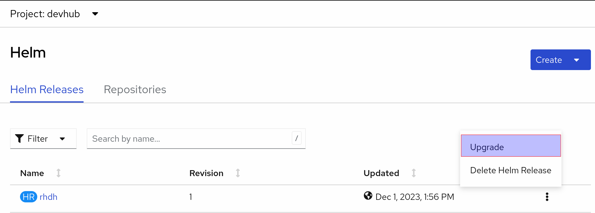
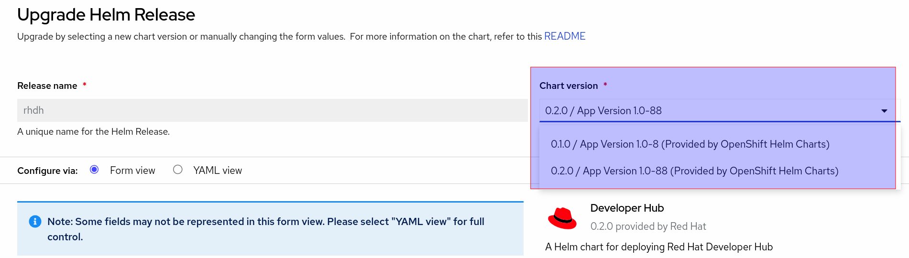

Upgrading RHDH
Upgrading RHDH depends on your install method that you selected.
| Before you perform any updates to RHDH, ensure that you back up ALL the data in the RHDH PostreSQL database! |
Backup the RHDH PostgreSQL Database
You need to install several CLI tools on your local workstation before upgrading the database.
-
Install the OpenShift CLI tool oc
-
Install the PostgreSQL CLI client psql and pg_dump
Backup Process
-
Use the oc CLI to log in to the OpenShift cluster as the cluster administrator, and switch to the devhub project.
$ oc login -u admin https://api.cluster-<your_guid>.dynamic.opentlc.com:6443 $ oc project devhub -
Scale the rhdh-developer-hub pods to 0 to prevent requests from modifying the database state during backup.
$ oc scale --replicas=0 deployment/rhdh-developer-hub -
Get the name of the PostgreSQL database pod and set it to an environment variable.
$ POD=`oc get pods --selector app.kubernetes.io/name=postgresql \ -o custom-columns=name:.metadata.name --no-headers`; echo $POD -
List the RHDH databases in the PostgreSQL instance. The RHDH databases are prefixed by backstage_.
$ oc rsh $POD sh-5.1$ psql postgres psql (15.3) Type "help" for help. postgres=# \l ... backstage_plugin_app backstage_plugin_auth backstage_plugin_catalog backstage_plugin_scaffolder backstage_plugin_search ... (8 rows) postgres=# \q sh-5.1$ exit
-
Enable port forwarding to the database pod.
$ oc port-forward $POD 5432:5432 Forwarding from 127.0.0.1:5432 -> 5432 Forwarding from [::1]:5432 -> 5432 -
Backup all the backstage_ the databases using the pg_dump command. Store the database backups in a safe location, for restoration at a later point in time in case of a disaster or failure.
$ pg_dump backstage_plugin_app > /tmp/backstage_plugin_app.sql \ --host=127.0.0.1 --port=5432 -U postgresRepeat the command for all the other backstage_ databases.
-
After all the databases have been backed up, you can scale the rhdh-developer-hub back to your original count.
$ oc scale --replicas=1 deployment/rhdh-developer-hub
| If you are using a non-default (that is, from a third party or commercial vendor) PostgreSQL database, refer to the backup instructions from the provider of the PostgreSQL database. Ensure that you scale the rhdh-developer-hub pod count to 0 before starting the backup procedure. |
Upgrading the RHDH Helm Chart
You can update RHDH using the OpenShift web console.
-
Ensure that you are in the Developer perspective of the OpenShift console. Click on
Helmto view the installed releases in theHelm Releasestab. -
Expand the hamburger menu on the right of the
rhdhrelease and clickUpgrade.Figure 1. Upgrade Helm Release -
In the
Upgrade Helm Releasepage, select the version of RHDH you want to upgrade to in theChart versiondrop-down. This list shows the different helm chart versions of RHDH that have been publicly released.Figure 2. Select Upgrade Version -
After you have selected a version for upgrade, click
Upgrade. Wait for 10-15 minutes while the resources in the older versions are deleted, and newer versions of the RHDH pod(s) are launched. -
Close all open RHDH web pages, and log in again to verify that the upgrade was successful.
Upgrading the RHDH Operator using the OpenShift Web Console
| The operator is not yet available publicly (ETA: Q1 2024). Watch this section for updates once the operator is GA. |
You can refer to the instructions here to upgrade the RHDH operator.